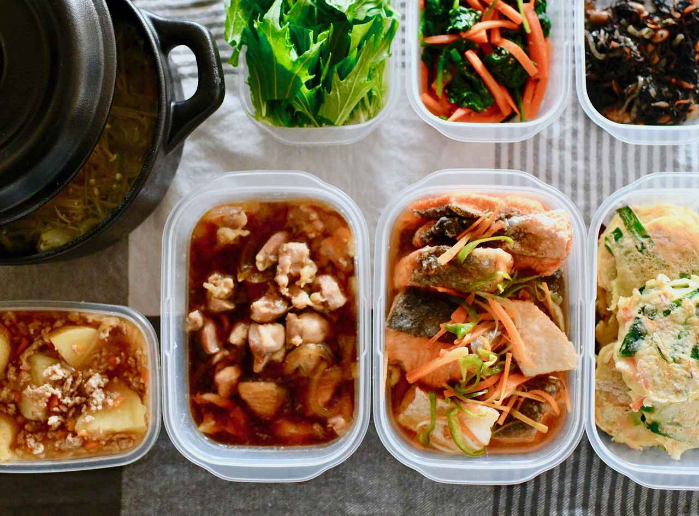

Campus Cooking：10分で作る学生飯
Campus Cooking：10分で作る学生飯【目次】
これだけは揃えたい！基本の調味料と道具
自炊を始めるための必須調味料

一人暮らしの限られたキッチンスペースや予算の中で、たくさんの調味料を買い揃える必要はありません。まずは「これさえあれば多くの学生飯が作れる」という基本の3点を厳選しました。これらを組み合わせるだけで、煮物、炒め物、照り焼きなど、大抵の和食メニューの味付けがカバーできます。
特に醤油、みりん、料理酒は、1：1：1の黄金比率で混ぜ合わせるだけで、失敗しない万能タレになります。初めは小さめのボトルで購入し、自炊の頻度に合わせてサイズを大きくしていくのが無難です。また、風味づけ用にサラダ油だけでなく、ごま油を1本持っておくと、炒め物のクオリティが格段に上がります。
学生におすすめのミニマム調理器具
道具選びのコツは「1台で何役もこなせるもの」を選ぶことです。狭いキッチンでも場所を取らず、洗い物も減らせる優秀な道具を紹介します。
1. 深型のフライパン（24cm〜26cm）
「焼く」「炒める」だけでなく、深さがあることで「煮る」「茹でる」までこれ1つでこなせます。パスタを茹でたり、カレーを作ったりすることも可能です。フッ素樹脂加工（テフロン加工）が施されているものを選べば、油が少なくても焦げ付きにくく、後片付けの洗う作業も非常に楽になります。
2. 万能包丁（三徳包丁）とまな板
肉、魚、野菜と何にでも使える三徳包丁が1本あれば十分です。大きすぎるものは狭いシンクで洗いにくいため、刃渡り16cm前後の少し小ぶりなものが扱いやすいです。まな板は、軽くて乾きやすいプラスチック製や、省スペースで使える丸型のものが一人暮らしのキッチンには適しています。
3. 耐熱ガラスボウル
切った食材を入れるだけでなく、そのまま電子レンジで加熱調理ができるため、レンジを活用した時短レシピには欠かせません。プラスチック製よりも色移りや匂い移りが少なく、油汚れが落ちやすいのが特徴です。1つあるだけで、自炊のバリエーションが大きく広がります。